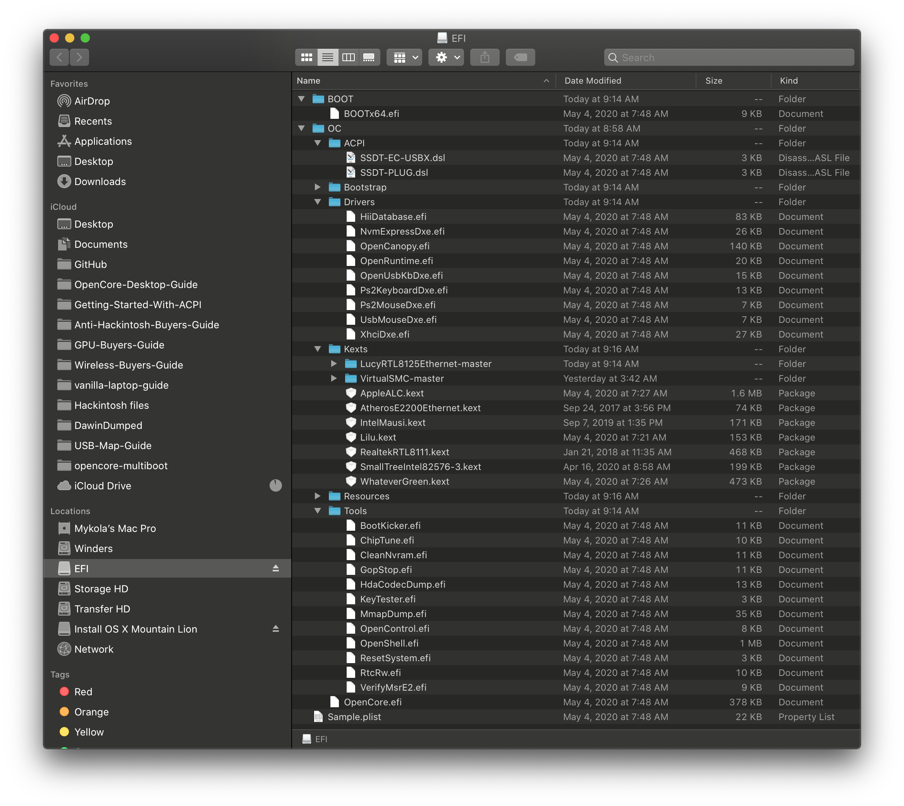

Installation Process
Now that you've finished setting up OpenCore, you're finally able to boot, main things to keep in mind:
- Make sure the laptop is connected to the charger
- If the battery isn't properly patched for macOS support, it can cause weird behaviors. To avoid headaches, make sure to have your device plugged in
- Enable BIOS settings optimal for macOS
- Read up on the Multiboot Guide
- And a copy of the troubleshooting page
- And a ton of patience
Recommended BIOS Settings
With many OEMs you're likely going to be heavily limited in your options, if you can try to find these options and enable them:
Disable:
- Fast Boot
- VT-d (can be enabled if you set
DisableIoMapperto YES) - Thunderbolt(For initial install, as Thunderbolt can cause issues if not setup correctly)
- Intel SGX
- Intel Platform Trust
- CFG Lock (MSR 0xE2 write protection)
Enable:
- VT-x
- Above 4G decoding
- Hyper-Threading
- Execute Disable Bit
- EHCI/XHCI Hand-off
- OS type: Windows 8.1/10 UEFI Mode
- If OpenCore doesn't show up, set this to OtherOS
- DVMT Pre-Allocated(iGPU Memory): 64MB
Double checking your work
One last thing we should go over before booting is how your EFI is setup:
| Good EFI | Bad EFI |
|---|---|
 |
 |
| * EFI folder found on EFI partition | * EFI folder missing |
| * ACPI Files are compiled(.aml) | * ACPI Files are not compiled(.dsl) |
| * DSDT is not included | * DSDT is included |
| * Removed unneeded Drivers(.efi) | * Leaves default Drivers |
| * All files in the Kexts folder end in .kext | * Includes source code and folders |
| * config.plist found under EFI/OC | * Neither renamed or placed the .plist in right location |
| * Only uses kexts that are needed | * Downloaded every kext listed |
Booting the OpenCore USB
So you're now ready to finally put the USB stick into your computer and boot off of it, remember that your laptop will still default to the internal drive with Windows so you'll need to enter the BIOS or boot menu and select the USB. You'll need to check in the user manual or use a bit of google to find out what Fn key accesses the BIOS and boot menu(ie. Esc, F2, F10 or F12)
Once you boot the USB, you'll likely be greeted to the following boot options:
- Windows
- macOS Base System (External) / Install macOS Catalina (External)
- OpenShell.efi
- Reset NVRAM
For use, Option 2. is the one we want. Depending how the installer was made, it may report as either "macOS Base System (External)" if Recovery Installer based and "Install macOS Catalina (External)" if full installer based.
macOS Installer
So you've finally got the installer booted, got through the verbose and hit the installer! Now that you've gotten this far, the main things to keep in mind:
- Drives you wish to install macOS on must be both of GUID partition Scheme and APFS
- High Sierra on HDD and all Sierra users will need to use macOS Journaled(HFS+)
- The drive must also have a 200MB partition
- By default, macOS will setup freshly formatted drives with 200MB
- See the Multiboot Guide for more info on partitioning a Windows Drive
Once you start the installation, you will want to wait until the lappie restarts. You will once again want to boot into OpenCore, but rather than selecting your USB installer/recovery - you will want to select the macOS installer on the hard drive to continue installation. You should get an apple logo, and after a few minutes you should get a timer at the bottom saying "x minutes remaining". This may be a good time to get a drink or snack as this will take a while. It may restart a couple more times, but if all goes well, it should finally plop you at the "Setup your Mac screen"
- You may want to set OpenCore to be your first boot option and set
Misc->Boot->Timeoutto something like 5-10 seconds to automatically have it go through the installer.
You're in! 🎉 You will want to go through the Post-Installation pages to finish setting up your laptop.